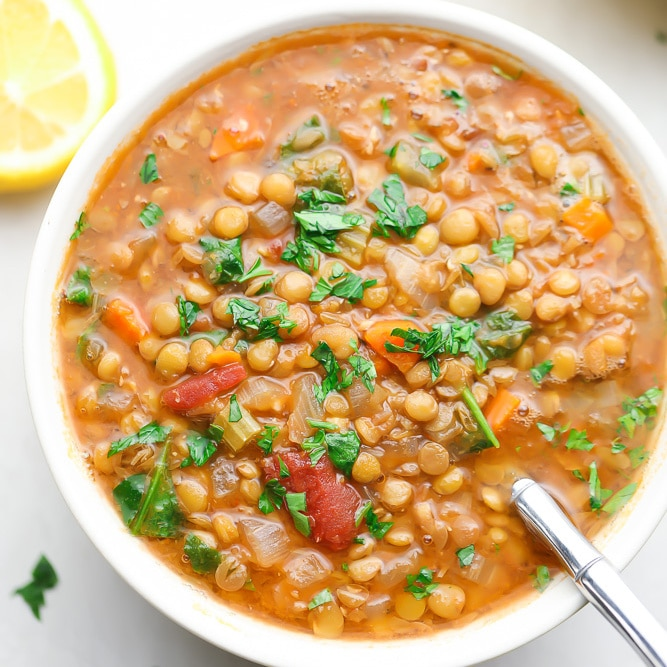

- Indian Cuisine
- Dosa
- -A dosai or dosha or dosa or dose is made from a fermented batter predominantly consisting of lentils and rice.
- Idly
- -Idli or idly are a type of savoury rice cake, made by steaming a batter consisting of fermented black lentils and rice.
- Veg Biryani
- - Long-grained rice (like basmati) flavored with fragrant spices such as saffron and layered with lamb, chicken, fish, or vegetables and a thick gravy.
- Chicken Biryani
- -Chicken Biryani is a savory chicken and rice dish that includes layers of chicken, rice, and aromatics. The bottom layer of rice absorbs all the chicken juices as it cooks, giving it a tender texture and rich flavor, while the top layer of rice turns out white and fluffy.


- Caribbean Cuisine
-
- Lentil
- - Lentil soup is a soup based on lentils; it may be vegetarian or include meat, and may use brown, red, yellow or black lentils, with or without the husk.
100/- -
- Coconut Shrimp Curry
- -A flavour-filled shrimp curry with an aromatic coconut curry sauce cooks in no time from scratch!
125/- 
-
- Caribbean Chicken
- - Grilled chicken marinated in a spicy sauce
300/- -
- Vegetable Patty
- - A pastry that contains various fillings and spices baked inside a flaky shell, often tinted golden yellow with an egg yolk mixture or turmeric.
150/- 
- Vietnamese Cuisine
- Baked pepper with cheese
- - Cheesy Stuffed Baby Bell Peppers are an irresistible appetizer of stuffed mini peppers with spicy cream cheese
- Pancake
- -Pancake is a crispy crepe-like layer made of a mix of turmeric powder and rice flour, stuffed with various ingredients, but most common are veggies, mung beans and meat, sometimes seafood or pork.
- Pho Dac Biet
- -Pho Dac Biet is prepared with Rice Noodles Medium Rare Eye Round Beef, Brisket, and Meatballs for a succulently delicious soup prepared with fresh ingredients.
- Mi Xao Chay
- -Mì xào chay is the name of vegetarian stir-fried noodles.